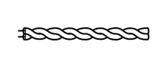
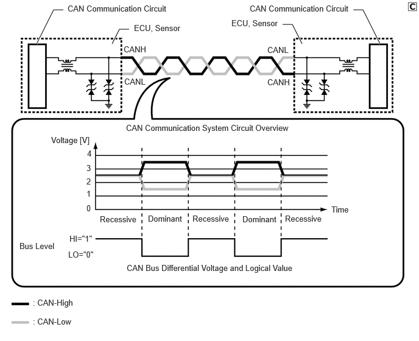
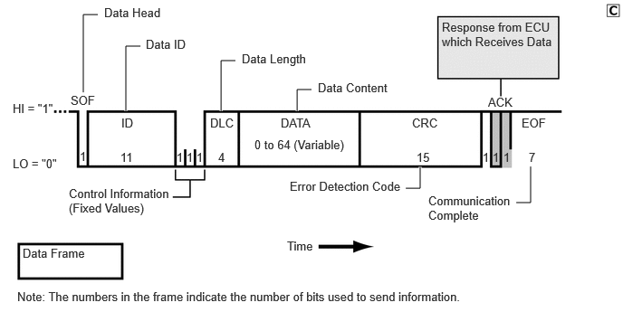
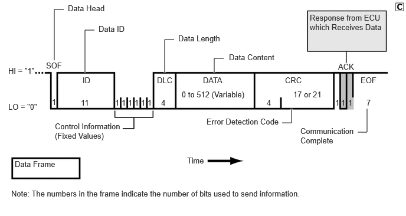

| Last Modified: 10-07-2025 | 6.11:8.1.0 | Doc ID: NM100000002GB1I |
| Model Year Start: 2024 | Model: Tacoma | Prod Date Range: [12/2023 - ] |
| Title: NETWORKING: CAN COMMUNICATION SYSTEM: GENERAL; 2024 - 2026 MY Tacoma Tacoma HV [12/2023 - ] | ||
GENERAL
OUTLINE
(a) Controller Area Network (CAN) communication, which makes high-speed communication possible, is used as a multiplex communication system* to simplify vehicle wire harnesses and achieve high-speed communication.
HINT:
*: The multiplex communication system connects several ECUs together with one communication line so that they can exchange data with each other. As a result, additional wiring is not required when integrating systems and adding functions.
(b) The CAN communication system is subdivided into 2 systems (CAN/CAN FD) based on communication protocol and communication speed. The CAN*1 system communicates at 500 kbps, and the CAN FD*2 system communicates at 2 Mbps.
HINT:
*1: CAN, an abbreviation of "Controller Area Network", is an ISO (International Organization for Standardization)-compliant serial communication.
*2: CAN FD is an abbreviation for CAN with Flexible Data rate, and is a transmission protocol that extends the CAN protocol to enable high-speed transmission of even larger amounts of data.
CAN and CAN FD Specifications
|
Protocol |
CAN |
CAN FD |
|---|---|---|
|
Communication Speed |
500 kbps |
2 Mbps |
|
Communication Wire |
Twisted-pair Wire |
|
|
Drive Type |
Differential Voltage Drive |
|
|
Data Length |
1 to 8 Byte (Variable) |
1 to 8, 12, 16, 20, 24, 32, 48, 64 Byte (Variable) |
(c) Communication Wire
(1) A twisted pair of wires is used for CAN communication.
|
Communication Wire |
Outline |
|
|---|---|---|
|
Twisted-pair Wire |
 |
This communication wire is a pair of twisted wires. Communication is driven by applying different voltages to the 2 lines in order to send a single signal. The bus line has a high line (2.5 V to 3.5 V of voltage is applied) and a low line (1.5 V to 2.5 V of voltage is applied). This system, which is called a "differential voltage drive", reduces the effects of electrical noise. |
(d) A CAN communication system is used to send information and data for multiple items, which have been converted into digital signals by the communication circuit, over one communication line (twisted-pair wire). As a result, the communication systems connected to the input systems (such as sensors and switches), control units and output systems (such as motors), achieve simplified vehicle wire harnesses.
(e) The CAN communication system consists of a pair of two communication lines (buses), CAN-High and CAN-Low. The system uses the differential voltage of the communication lines to determine the bus level* and transmits a digital signal at 500 kbps or 2 Mbps using an exclusive communication protocol (communication rules).
HINT:
*: The bus level has a dominant level and a recessive level, and the CAN communication system logically calculates the dominant level as "0" and the recessive level as "1".
(f) CAN and CAN FD Communication Protocol (Communication Rules)
(1) The CAN communication system is a type of multiplex communication system that uses one communication line for all devices that make up the network and makes it possible to send and receive data while offsetting the communication timing. In order to do so, communication is performed according to a communication protocol (communication rules) that is shared by the devices. This communication protocol helps communication be performed smoothly and securely.
(2) The CAN communication protocol uses the Carrier Sense Multiple Access with Collision Detection (CSMA/CD) protocol* as the rules for sending data via the communication line. This protocol allows all devices to share one communication line while retaining the right to start sending data.
HINT:
*: This is a type of communication access control where devices constantly detect the condition of the communication line and only send data when no other data is being sent. In addition, when the system detects that a data collision has occurred (data was simultaneously sent from another device), it waits for a certain period of time before resending the data.
(3) Data used by the CAN communication system is composed of a single frame that includes parts such as "ID", "RTR", "DLC", "DATA", "CRC" and "ACK".
CAN Communication Data Frame
(4) Data used by the CAN FD communication system is composed of a single frame that includes parts such as "ID", "RRS", "FDF", "DLC", "DATA", "CRC" and "ACK".
CAN FD Communication Data Frame
(g) A diagnostic tool can be connected to perform diagnostic communication. Refer to the Repair Manual for details.